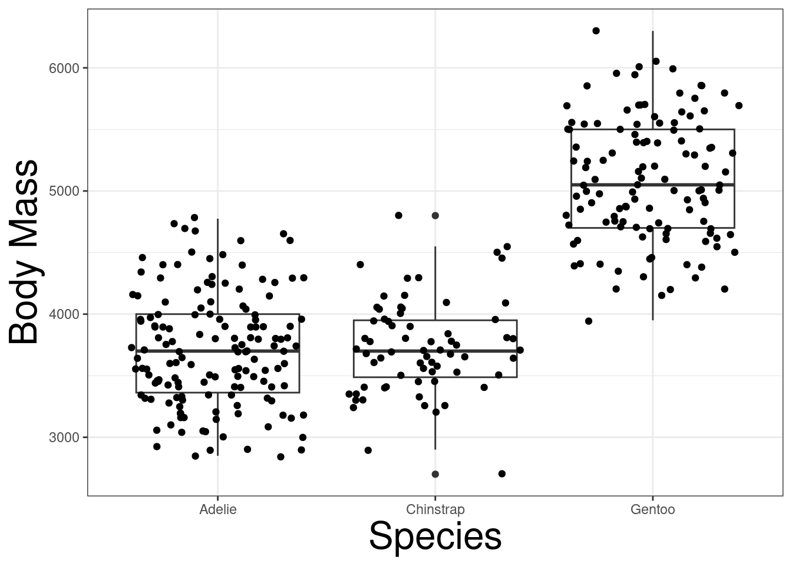
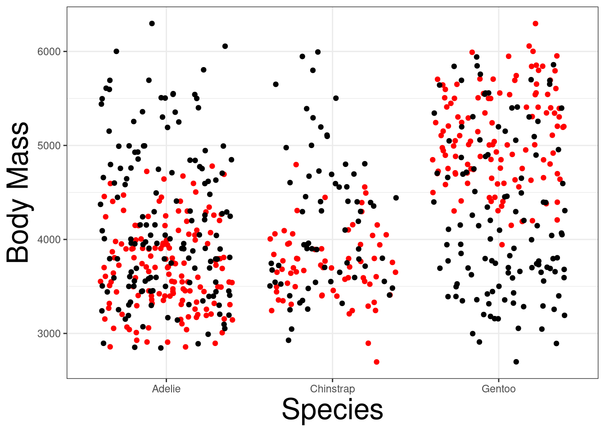
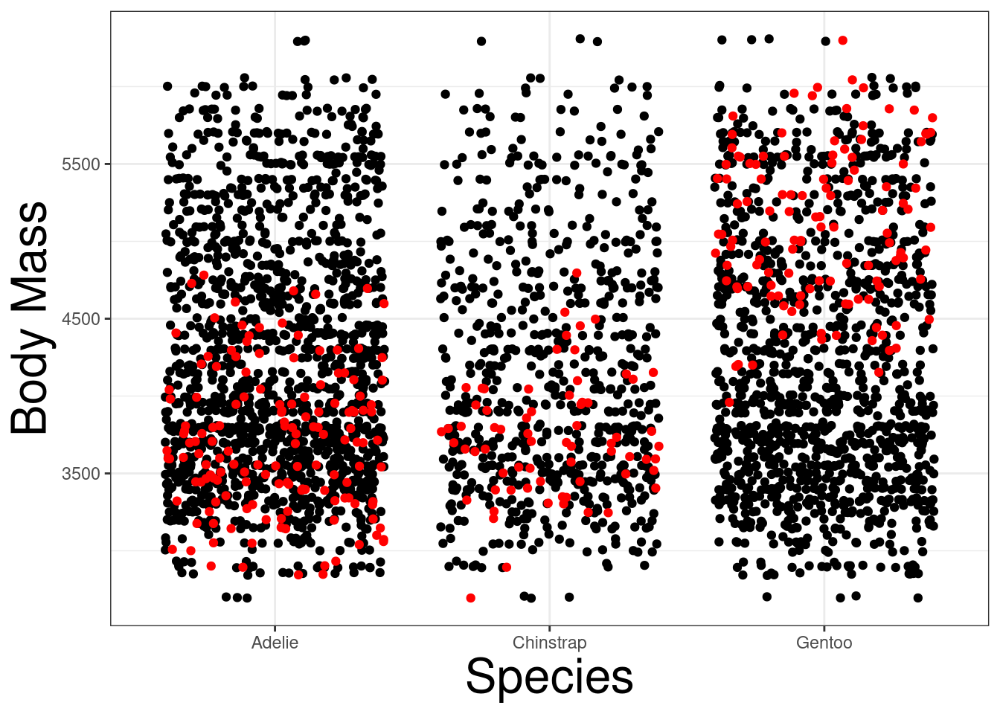
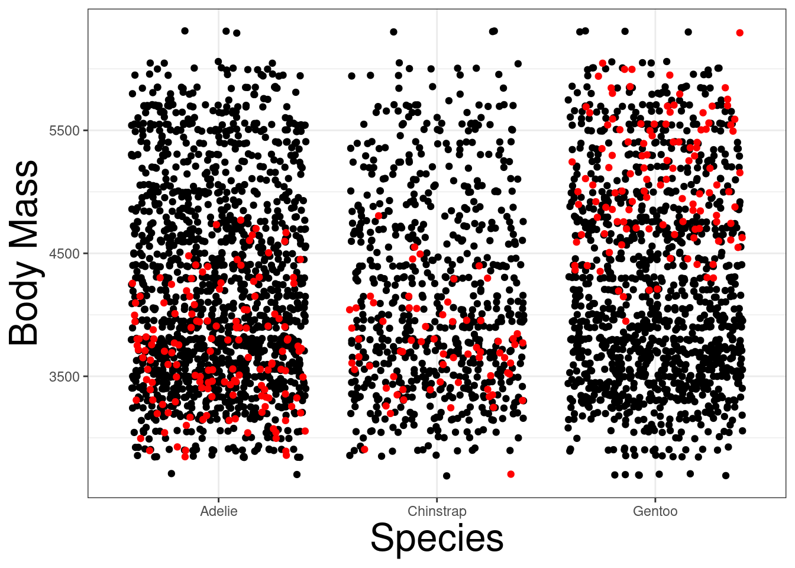
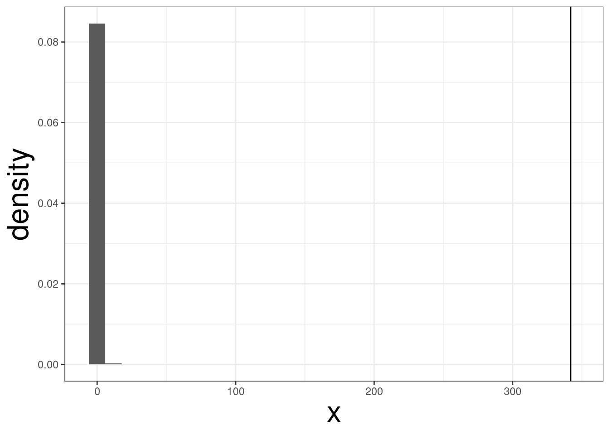

library(tidyverse)
library(palmerpenguins)
theme_set(theme_bw())
theme_update(axis.title = element_text(size = 24))
shuffle <- function(x){
n <- length(x)
return(sample(x, n))
}
penguins <- penguins |> drop_na() Randomization (Permutations) Tests
Randomization tests, also known as permutation tests, are used to test the null hypothesis is
R Packages and Functions Used
Permutation Tests
Permutation tests conducts a statistical test by constructing the null distribution by rearranging the data points in a sample.
Null hypothesis states that the rearrangements of the data points are random.
Alternative hypothesis states that the rearrangement of the data points aren’t random.
Permutation Distributions
Null
\[ F_x = F_y \]
Alternative
\[ F_x \neq F_y \]
Suppose \(\{X_i, Y_i\}^n_{i=1}\) is an observed permutation, \(X = \{X_1, \ldots, X_n\}\), \(Y = \{Y_1, \ldots, Y_n\}\).
The Probability of any permuation is \(1/n!\).
Therefore, for a statistic \(T(X,Y)\), a sampling distribution can be constructed by all the different permutations.
A hypothesis test can be conducted by observing the proportion of more extreme values of the sample statistic.
Approximate Permutation Distribution
Constructing the distribution for the permutations can be challenging if the number of permutations is high! If \(n=100\), the number of permutations is \(100!\):
factorial(100)#> [1] 9.332622e+157Therefore, simulation techniques are needed to approximate the p-value.
By randomly drawing from the sample, we can approximate the p-value.
Algorithm
- Construct a new data set
- Fix the predictor (\(X\)) variable and randomly assign a data point \(Y\) to the fixed \(X\)
- Compute a test statistic using the new data set and store the value
- Repeat steps 1 and 2 for \(N\) times
- Compute the test statistic from the empirical sample (un-permutated)
- Count how many permutated statistics that are more extreme than the sample test statistic (\(m\))
- Compute the Monte Carlo p-value
\[ p = \frac{m +1}{N + 1} \]
Example: Emperical Data
Code
penguins |> ggplot(aes(x=species, y = body_mass_g)) +
geom_boxplot() +
geom_jitter() +
labs(x = "Species", y = "Body Mass")
Example: Random Shuffling
Code
penguins |> ggplot() +
labs(x = "Species", y = "Body Mass") +
geom_jitter(aes(species, shuffle(body_mass_g)))
Example: Random/Emperical
Code
penguins |> ggplot(aes(x = species, y = body_mass_g)) +
labs(x = "Species", y = "Body Mass") +
geom_jitter(col = "red") +
geom_jitter(aes(species, shuffle(body_mass_g)))
Example: Random/Emperical
Code
penguins |> ggplot(aes(x = species, y = body_mass_g)) +
labs(x = "Species", y = "Body Mass") +
geom_jitter(aes(species, shuffle(body_mass_g))) +
geom_jitter(aes(species, shuffle(body_mass_g))) +
geom_jitter(aes(species, shuffle(body_mass_g))) +
geom_jitter(aes(species, shuffle(body_mass_g))) +
geom_jitter(aes(species, shuffle(body_mass_g))) +
geom_jitter(aes(species, shuffle(body_mass_g))) +
geom_jitter(aes(species, shuffle(body_mass_g))) +
geom_jitter(aes(species, shuffle(body_mass_g))) +
geom_jitter(aes(species, shuffle(body_mass_g))) +
geom_jitter(aes(species, shuffle(body_mass_g))) +
geom_jitter(col = "red") 
ANOVA
We want to determine if body mass of penguins are different for different species.
penguins |> aov(body_mass_g ~ species, data = _) |> anova()Permutation Test
f_stat <- penguins |>
aov(body_mass_g ~ species, data = _) |>
anova() |>
_$`F value`[1]
f_sim <- function(i){
ff <- penguins |>
aov(shuffle(body_mass_g) ~ species, data = _) |>
anova() |>
_$`F value`[1]
return(ff)
}
f_dist <- replicate(10000, f_sim(1))
tibble(x= f_dist) |>
ggplot(aes(x, y = ..density..)) +
geom_histogram() +
geom_vline(xintercept = f_stat)#> Warning: The dot-dot notation (`..density..`) was deprecated in ggplot2 3.4.0.
#> ℹ Please use `after_stat(density)` instead.
sum(f_stat < f_dist) + 1 / (length(f_dist) + 1)#> [1] 9.999e-05Permutation Example
Permutation Linear Regression
- Keep the predictor values fixed (unchanged)
- Randomly assign the sampled outcome values to a fixed predictor
- Compute the regression coefficients for the predictor variable